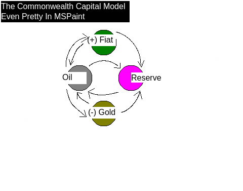
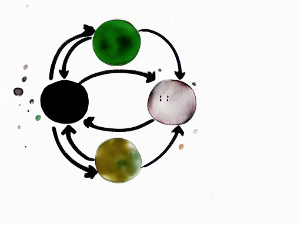
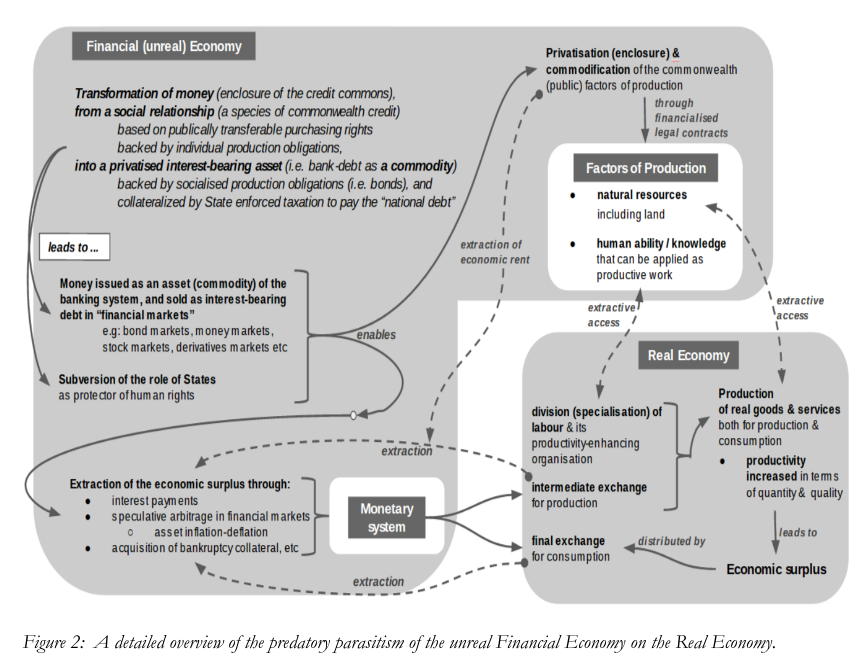

The Commonwealth Capital Model

The Commonwealth Capital Model is an experimental microcosmic economy of assets comprised of a core asset, CommonOil, and 3 derivative assets, CommonShare, CommonGold, and CommonFiat. These assets are minted according to the core asset's activity and the current values of a set of fine-tunable fractions.
CommonOil is the core token that retains pre-existing value in a mathematically provable way while reducing supply via a burn & pool process. It does this by setting a tax divisor and burning half of the taxed amount while pooling the other half in a wallet that manages and "tints"an indivisible token, CommonShare. The burned tokens are then used to determine whether to "brint" to the sender CommonFiat and/or CommonGold, binding the supply inflation of the derivative classes to the burnt quantity of the core asset and the current values of the tuneable fractions. Based on the current fractions set, a portion of these "brinted" assets are also pooled in the Commonwealth Reserve. This multi asset class Reserve underwrites the value of the entire economy derived, particularly CommonFiat.
Key Made Up Terms In This Doc
Tint
- the minting of an asset of one class via the process of taxing/pooling another asset of a different class
Brint
- the minting of an asset of one or more classes via the process of burning another asset of another class, and using the burnt quantity as a seed to determine minting. ASH already does this kind of burning in exchange for a different asset class with NFTs, but burning external contracts IMO requires externally defined "value" definitions = more complexity required to operate "fairly". This proposed form of "brinting" deals with only interal/derivative assets, making the market value ultimately irrelevant outside of DAO decisions re: internal value, while it could be generalized to include an ASH-like model with appropriate consideration to curb cheating.
DISCLAIMER: All numbers in this document are subject to change before any kind of launch, if there is ever an actual launch, and may have already been changed in dev builds without being publicly reflected. It's best to assume the numbers/math below are only partially current/correct, as both codebase and this documentation are in active development.
FURTHER DISCLAIMER: This model is experimental, and without proper analysis or whitepaper being drafted should remain viewed as such. No warranty is provided for the reckless implementation of any of this model. That said, this is what we're currently dealing with... so I haven't yet figured out how the Commonwealth Capital Model makes less sense than this...

The Assets Classes
XCO (CommonOil):
This is the central token that determines the supply inflation of all other Commonwealth assets. It's a deflationary burncoin like any other, but with a twist of adding “tinting” of Reserve Shares, and “brinting” of Fiat and Gold. See note in tokenomics below on potential/likely demurrage addition (disabled to start, but will be another toggleable state/fraction)
- Decimals: 18
- Total Supply: 10900000000 (10.9 billion, 1/person @ peak pop.)
- Supply Orientation: Deflationary
XCRS (CommonShare):
This is an indivisible token representing a unit of the underlying pool of assets, made up of a combination of XCO, XCF, and XCG collected through tinting and brinting processes, determined by the reserveFraction divisors set in each contract mentioned.
- Decimals: 0
- Total Supply: 0 at launch, inflates based on XCO activity
- Supply Orientation: Will largely track Oil burn rate, getting scarcer as Oil does. Dependent on monetary policy.
XCF (CommonFiat):
This is an inflationary token “brinted” at a fraction of the burnt XCO value (1/2 during dev/launch), multiplied by an amount to account for the supply size disparity between XCO & XCF (x100 at launch). A fraction (1/3 at launch) of XCF minted is transferred to the XCRS pool, and the remainder is transferred to the “brinter”. Intended to be more freely liquid than other assets, with a decimal count more closely reflecting real world fiat values (maybe?… activity will determine whether that idea is viable or not… but the x100 multiplier to start should give plenty of control over initial inflation/deflation of XCF once an "ideal price" is determined by market/DAO). See note in tokenomics below on potential/likely demurrage addition (disabled to start, but will be another toggleable state/fraction).
- Decimals: 6
- Total Supply: 1000000000000 (1 trillion) at launch, inflates based on XCO activity
- Supply Orientation: Inflationary, at a low but appreciable and fine tunable rate.
XCG (CommonGold):
This is a deflationary token with a “brinted” at a fraction of the burnt XCO value. To determine minting, it takes the brinted value and divides it by the entropyFraction (5 at launch... maybe 10? undecided), and again by the current core tax divisor squared, and if that value is >=1, it mints the XCG and transfers a fraction (1/2 at launch to provide max value to XCRS holders) to the XCRS pool, and the remainder to the “brinter”. Intended to be a scarce asset, like a gold/BTC.
- Decimals: 18
- Total Supply: 0 at launch, inflates based on XCO activity
- Supply Orientation: Deflationary, growing scarcer as core tax rate drops. Hard coded "halving" mechanic to be added to ensure long term scarcity is achieved.
Tokenomics
At Launch:
- 10 = core tax divisor (1/10 tax)
- 1/2 tax = POOL, share distribution will be tinted at a rate of 1 XCRS/10 XCO pooled, where XCRS calc >=1, otherwise 1/2 of the would-be pooled amount is sent to the ops wallet to help maintain ops costs, with the rest returning to the readyAmount and transferred
- 1/2 tax = BURN, brint XCF at a rate of 1/2 the burn x100 (to account for supply size disparity) so long as the pre-multiplied XCF calc >=1; brint XCG at a rate of 1/2 the burn/entropyFraction/(core tax*core tax), so long as XCG calc >=1 (entropyFraction = 5 at launch… 10 feels more right… discuss…)
- 1/2 of XCG and 1/3 of XCF brinted is pooled in XCRS, the rest is transferred to the “brinter”
- all fraction divisors can be adjusted by owner, except 7… the core tax divisor is hard coded to not accept anything lower than 7, maintaining a hardcoded max core tax rate of 14.2857%. Considered 5 and 6 for the lower bound, but feel like treating this more like a sales tax than an income/cap-gains tax in scale feels more right… may or may not regret the limitation but it seems logical atm…
- XCF will likely have a demurrage feature hacked in by (any potential) launch, adding a penalty for unmoved XCF to keep it circulating, reducing the need to keep its supply inflating over time. Haven't determined how fraction will be computed yet (use core tax rate as a baseline and 1/2 annually to start maybe?... kind of want to enforce a max, but also kind of already do with the core tax rate so implementation undecided atm. feedback welcome. will likely keep toggled off by default as to not limit interest/price discovery/just seeing where things go, but feel like it should be a component feature of XCF to give it all available management options... maybe more to come with more digging into alt currency models.
Scarcity Metrics (At Launch)
- XCRS = 1/200 XCO tx.value if 1/200 tx.value >=1 (indivisible, so remainder rolled back into transfer value)
- XCF = 10/4 XCO tx.value if 1/40 tx.value >=1
- XCG = 1/2000 XCO tx.value, if 1/2000 tx.value >=1 (will be 1/4000 when fiatFraction = 10 instead of 5)
- XCO loses ~1/10 tx.value from market supply each tx (less non-share minting remainder of pooled value that’s rolled back into the transfer, and only 7.5% for sub-XCRS minting tx sizes given only half the pool collected as ops tax, which is technically not "removed from the market", but instead will be sold as needed for ops expenses)
- as core tax divisor increases to lower the tax rate with adoption, scarcity of XCG increases exponentially (given the core tax divisor squared is used as the divisor in its minting calculation, so higher divisor = lower tax, but exponentially harder to mint XCG)
Owner (Future DAO?) Controllable Values
Tokenomics Values
XCO
uint8 taxFraction: Core tax divisor. Hard coded requirement that it's >= 7 to retain a max core tax of 14.2857% (10, for 1/10 as launch default)uint8 reserveFraction: Divisor for the fraction of the tax that is considered for the reserve pool (2, for 1/2 as launch default)uint8 opsFraction: Divisor for the fraction of the pool considered amount to transfer to the ops wallet for any sub-share minting transfers (2, for 1/2 as launch default)uint8 brintFraction: Divisor for the fraction of the burnt amount to be considered for brinting numbers (2, for 1/2 as launch default)uint32 fiatFraction: Dividend (multiplier) for brinted value of XCF to account for supply size disparity (100, for 100/1 as launch default). Able to be adjusted to provide an extra means to adjust XCF inflation rate to adhere to whatever DAO set targets are decided by consensus. At launch the unilaterally decided inflation target consensus is… there’s not enough information for a valid consensus, and no clear sense of what the “right” price is, so the market can decide and the DAO can direct once formed.uint16 entropyFraction: Divisor for brinted value of XCG to account for supply size disparity (5, for 1/5 as launch default, but I believe 1/10 is the more “correct” ratio?… increment from 5 to 10 over first 6 months to help with early interest maybe?)uint8 shareFraction: Divisor for number of tax-pooled XCO/share (10, for 1/10 as launch default)
XCF
uint8 reserveFraction: divisor for the fraction of minted XCF to pool in Reserve pool (3, for 1/3 as launch default)
XCG
uint8 reserveFraction: divisor for the fraction of minted XCG to pool in Reserve pool (2, for 1/2 as launch default)
Operational Values
XCO
bool reserveLinked: tracks whether reserve is currently linked and/or reserve share tinting is enabledbool fiatLinked: tracks whether fiat contract is currently linked and/or fiat brinting is enabledbool entropyLinked: tracks whether entropy contract is currently linked and/or entropy brinting is enabledbool taxEnabled: tracks whether tax is enabled or not, acting as a standard ERC20 token if it's notaddress reserve_address: the address for XCRS, which retains a Reserve pool of XCO, XCF, and XCG; if not set, reserveLinked is falseaddress fiat_address: the address for XCFaddress entropy_address: the address for XCGaddress ops_address: the wallet held by Commonwealth Foundation to be used for operational expenses (accounting, legal, hiring, infrastructure, marketing, etc); if not set ops_tax isn’t collected (only collected on sub XCRS minting txs if set)address lp_pool_address: address for the official liquidity pool, to disable tax for intermediary transfers; if not set, swaps will incur additional taxes (I think… don’t fully understand that side of liquidity pools)address lp_router_address: address for the official liquidity pool, to disable tax for intermediary transfers; if not set, swaps will incur additional taxes (I think… don’t fully understand that side of liquidity pools)
XCRS
address minter_address: address of permitted minting contract (XCO as launch default)
XCF
address minter_address: address of permitted minting contract (XCO as launch default)address reserve_address: address of Fraction Reserve pool (XCRS address as launch default)
XCG
address minter_address: address of permitted minting contract (XCO as launch default)address reserve_address: address of Fraction Reserve pool (XCRS address as launch default)
Team
Current (1)
- Brandon Thorn: Fullstack/smart contract/game developer with 12+ years professional experience and a lifetime of nerd experience. In a previous life I founded, developed and compiled a small team around sourced.fm, an experiment in social capitalism pairing regionalized music discussions with crowdfunding. Currently the Web & Systems Manager/Director of Zany Ideas @ Exclaim! Media, handing off responsibilities to dive full time into web3 R&D through DEIT (Digital Estate Investment Trust), my web3 skunkworks factory I've been experimenting under the past few years.
Essential Unfilled Roles (7)
- Brand Development/Management: The "brand" so far is made up of a fairly generic feeling Looka brandkit and some AI artwork. Given the ambitiousness of the project, honing in on core messaging and finding a way to reflect that in the brand identity and marketing campaigns will be essential to growth. While technical expertise is essential to the project, brand definition lands top of list because it will help finding technical expertise.
- Community Management: Once the brand lines then up, it means nothing if there's nobody around to keep people engaged with the project. Given 99% of this project is people oriented, the community manager will remain the lynchpin of the project through all phases of development and launch.
- Finance Wizard/Monetary Policy Wonk: Given the nature of the project, someone with strong economics understanding, particularly in the realm of multi-variable monetary policy, is entirely critical. This Litepaper can't be made into a proper Whitepaper without finding this person.
- Solidity Devs/DID Experts: While the Commonwealth Capital assets are relatively simple contracts that could be launched once initial marketing has built an audience for the project, developing the DID and the network's services beyond their initial prototype versions is going to require a team of skilled Solidity developers, at least couple who have strong experience with DID systems. ERC2535 and the DiamondStorage pattern are used, and will remain the paradigm used through DID and service development.
- Legal: I have no idea how to assess the legal considerations of any of these assets, and as different asset classes I assume they will likely have different considerations. A lawyer well versed in crypto assets, particularly who's also well versed in smart contract development will be a crucial asset.
- Ops/PM: I've planned and executed many project cycles and in the early phases will likely end up filling in as PM. I do enjoy planning and seeing through projects, but as the project scales finding people experienced in ops/PM would be a huge asset, allowing me to work with each team on the expanding number of initiatives in development while networking to expand the network.
- Bizdev/B2B Sales: Past the DID + Governance launch, the primary focus will be on vendor/marketplace onboarding for the Fiat, along with aiming to sell the various investment and insurance offerings that are developed. Onboarding corps, both large and small, local and abroad, to leverage the infrastructure developed will be essential to achieve the longer term goals of the project: to assert Commonwealth Fiat as a viable alternative to existing central bank determined/derived fiat, and as a stopgap owned by the commons in the face of new corporate owned attempts to usurp control of the money supply (Libra/Diem).
- Security Audit (third party contract): While the Commonwealth Assets are developed using the SolidState Solidity contracts, a proper audit would still be of value, and will be absolutely required before the DID + Governance contracts can be deployed.
Extremely Advantageous Unfilled Role (1)
- Game Theory: I know I want to learn more about this myself, but I am unfortunately not math nerd enough to have taken on the challenge. There’s something about this project that feels like what could make or break it is very much going to be this role though… pairing game theory with market modelling techniques to both help launch the most viable version of this, while also providing a foundation for the DAO to help build automated models into its fine tuning machine over time. The ability to simulate multi-variable monetary policy changes and their market effects on a set of interrelated assets would be a huge asset.
Roadmap
To Date
- November 18th, 2021: concept inception as Burnpool with a burn token & reseerve share token; initial contracts & tasks written
- November 21st, 2021: brinting/tinting concepts/delineation becomes more clear, and project changes to Fractional, adding fiat and "entropy" (gold) to the burn token and reserve share
- November 21st, 2021: RC contracts compiled
- November 22nd-24th, 2021: wrote the initial version of this documentation, domain registered, logo made, website made, pitchdeck made
- November 25th, 2021: v0 successfully deployed on local testnet & site soft launched capturing the project as Fractional.Foundation
- December 8th-9th, 2021: dove into Bottlecap/Deluge after aiming to think through what the BitTorrent protocol of capital flows might look like after realizing even if Fractional is viable, money isn't money if its not moving, making me want to think through infrastructure made for exchange, along with services that bake utility into the assets
- June 9th-July 12th, 2022: inspired by NATS.io, built a toy prototype of an ethereally defined intranet-like network I called CMesh, which aimed to build DID/IAM into the core
- August 5, 2022: with DID/identity still on the brain, with the Fractional model still haunting me whenever I'd think of it collecting dust, and having just watched the video counterpart to Ray Dalio's "The Changing World Order", I aimed to roughly define a model that had been swimming in my head, parts for over a decade, at SI2, which incorporated Fractional as its Financial Center/Reserve
- Late February 2023: developed a secret sharing project, both a basic implementation, and then a second implementation with replay protection, both emulating elements of EIP712 to ensure messages are signed to the expected contract on the expected chain.
- Early March 2023: began working on a web3 project aiming to make something like LinkedIn on chain, but began incorporating an Identity token and realized I was inadvertently making part of the SI2 model. Between the banking crisis emerging, the "Queen of Q" scamming people with loyalty bucks while I squat a seemingly viable model out of uncertainty, returning to it subconsiously and consciously over and over again, and realizing despite the high risk of failure, the project could "fail" like Napster failed... and still succeed, The Commonwealth is born, aiming to manifest the goals of SI2 in earnest, but initially focusing in on the Capital Model + DID as the MVP and foundation
- March 13, 2023: started initial work of porting Fractional contracts to ERC2535 implementation and incorporating demurrage mechanic
- March 19, 2023: initial wethecommonwealth.org site made, containing the initial draft of the 95 Statements
- March 21, 2023: site launched, Discord server linked, and launch tweets made from @CommonealthDAO (forgetting new account = sandboxed, switching gears to LinkedIn to network instead)
- March 26, 2023: first meeting taken re: the project with a social capital subject expert; provided guidance on defining core messaging and avoiding "elite capture"
- March 27, 2023: pitchdeck made & published
- March 28, 2023: brochure made & published
- March 29, 2023: this Litepaper version was edited from the original Fractional Litepaper & published; SI2 repo imported from personal Github to DEITrust to be edited to reflect current version of the project overview
Next Steps (rather than pretending to have an actual timeline…)
- finish porting prototype to ERC2535 implementation, adding demurrage functionality to CommonOil and CommonFiat, defaulting to no demurrage
- develop ERC721 token to act as a placeholder for the DID, while providing a means to gauge interest and fundraise inititial liquidity before releasing the Capital Model assets
- develop website/dApp for Capital Model & NFT, brokering the NFT from the site, tracking market stats, and adding charts and indicators over time aiming for full transparency into the Commonwealth Economy as a guiding principal
- launch Capital Model & NFT to testnet, integrate dApp and deploy dApp
- plan & hype mainnet release after testnet testing is complete
- post Capital Model & NFT mainnet release, begin work in earnest on DID prototype, and defining DAO structure/process and the DID integrated contracts required for a v0 Governance service
- begin research in earnest into defining new global market indexes as Chainlink DONs, including FOREX price feeds covering as many currencies as possible and a capweighted index representing an "average" purchasing power across all national currencies to compare CommonFiat to (think: SDR or G10 baskets, only capturing a more broad sample of currencies).
- post DID + Governance service launch, begin work in earnest on DID enabled SI2 services (group insurance, social-good investments, open education accreditation and hiring service, etc)